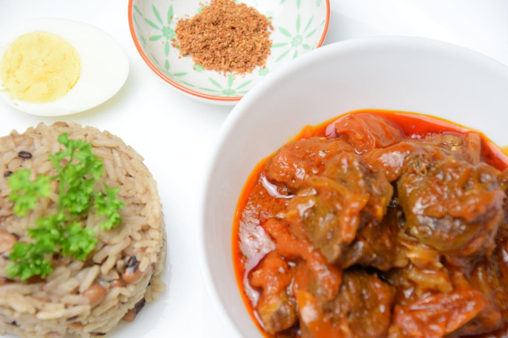

Ayimolou

Ayimolou is a dish made with rice and beans
that's in the name
ayi=beans
molou=rice
for our dishes It's a beef stew, accompanied by rice with beans and a hard-boiled egg
Ingredients:
- 250g Black-eyed bean
- 500g fragrant rice
- 1kg Beef meat
- 2 Onion
- 1 red pepper
- 6 eggs
- 100g Concentrated tomato
- 1/2l Oil
- Salt and Pepper
- 2 stock cube and 2 cloves garlic
Steps
- Rinse then soak the beans the day before the day of preparation
- Cut and rinse the meat.
Chop an onion.
Put the meat and the minced onion in a casserole dish.
Add salt and pepper to taste.
Pour water into the meat casserole on the fire and cook.
- Lightly season the beans and cook them in a casserole dish for 10 to 12 minutes.
Check that the beans are cooked and soft.
Once the beans are ready, transfer them to a pot with their juices.
Put the pot on the fire.
- Cooking is complete when the dough comes away from the edges of the pan.Wash the rice and add it to the pot of beans on the fire.
Add 2 tbsp of oil and cook over low heat until the water has completely evaporated and the rice is cooked.
Mix, drain and set aside.
- In a pot over low heat, put 4 tbsp of oil and add a sliced onion and cook for 3 minutes, stirring.
Add the 100g of tomato to the pot and cook, stirring regularly.
Add the minced pepper and stir.
Add a glass of water, season to taste and simmer over low heat.
- Once the meat has softened, brown it in oil and add it to the tomato sauce at the end of cooking.
Simmer everything for another 2-3 minutes then serve and enjoy...
Enjoy your food!!
HOME